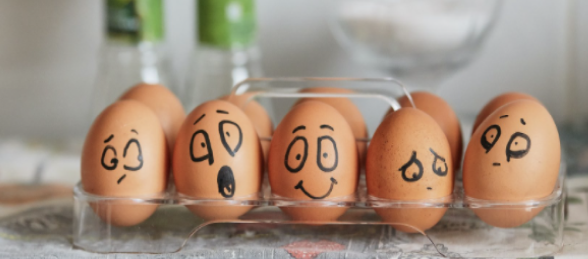

Автор: Лиза Файнтух
Изначально термин «эмоциональное профессиональной сфере и относился...
21.08.2021
Автор: Екатерина Бельтюкова
Один из самых важных навыков, которые может дать работа с психотерапевтом - умение в разных ситуациях по-разному обходиться...
11.08.2021
Клиенты часто спрашивают, как КОНТРОЛИРОВАТЬ свои негативные эмоции. Пришло время об этом написать!
07.08.2021
Автор: Лиза Файнтух под редакцией Екатерины Бельтюковой
Изначально термин «эмоциональное я...
Один из самых важных навыков, которые может дать работа с психотерапевтом - умение в разных ситуациях по-разному обходиться ...